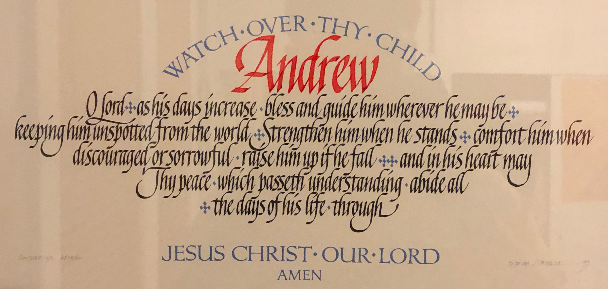
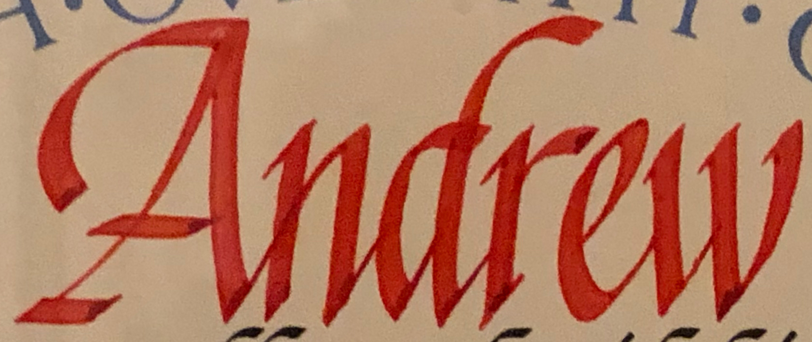
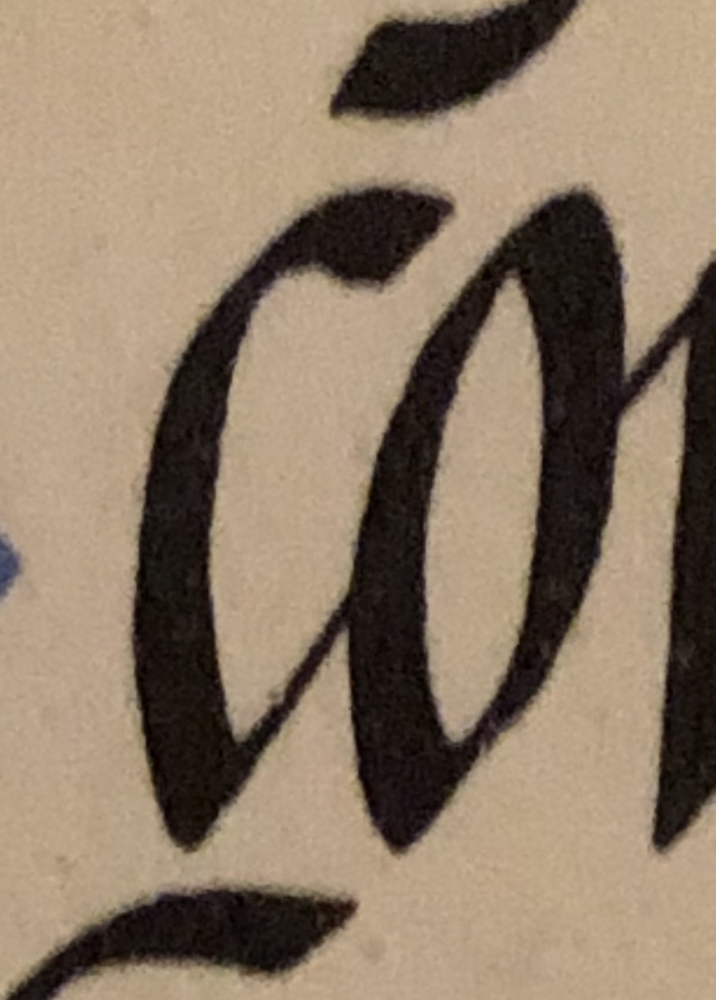
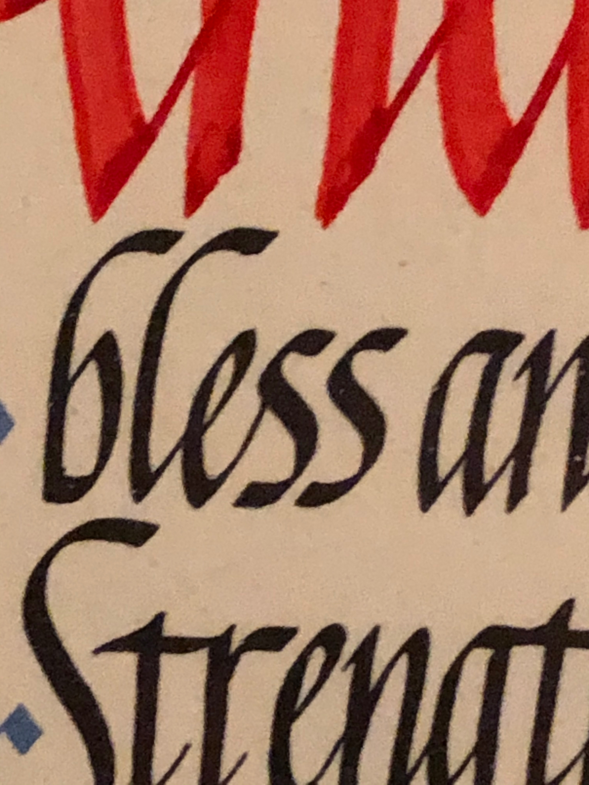
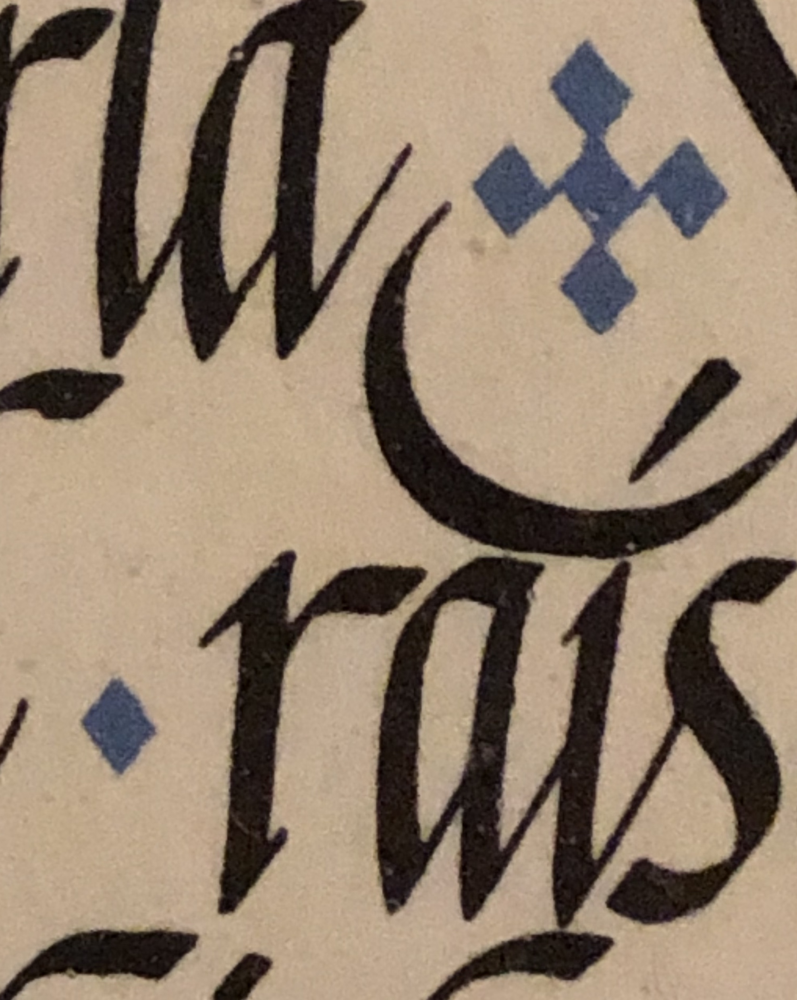
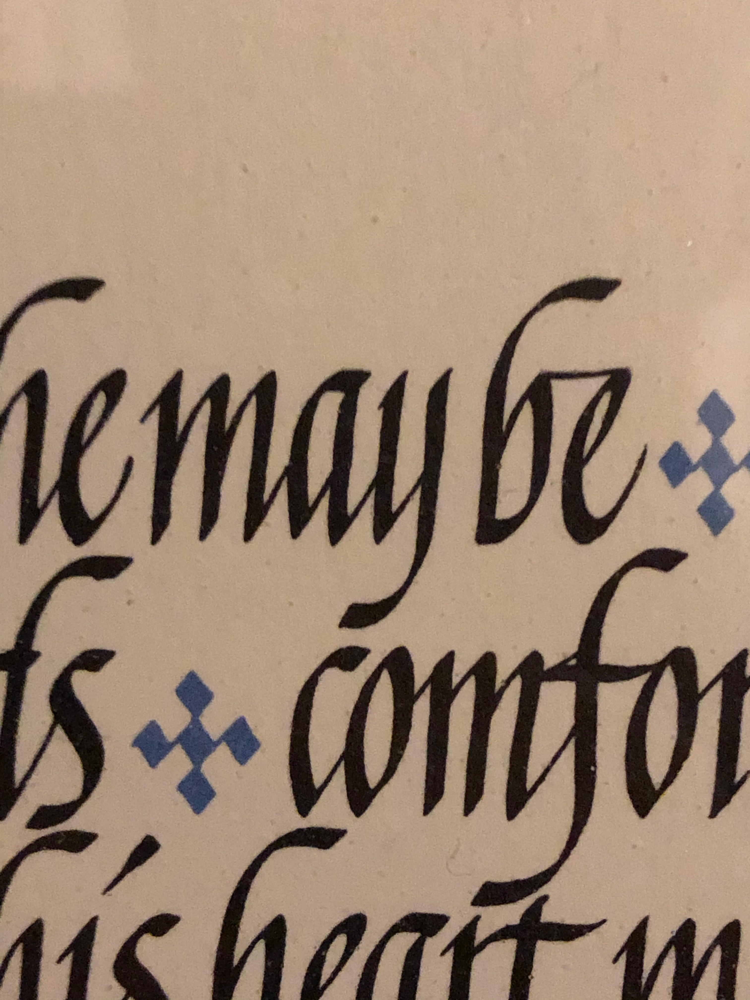
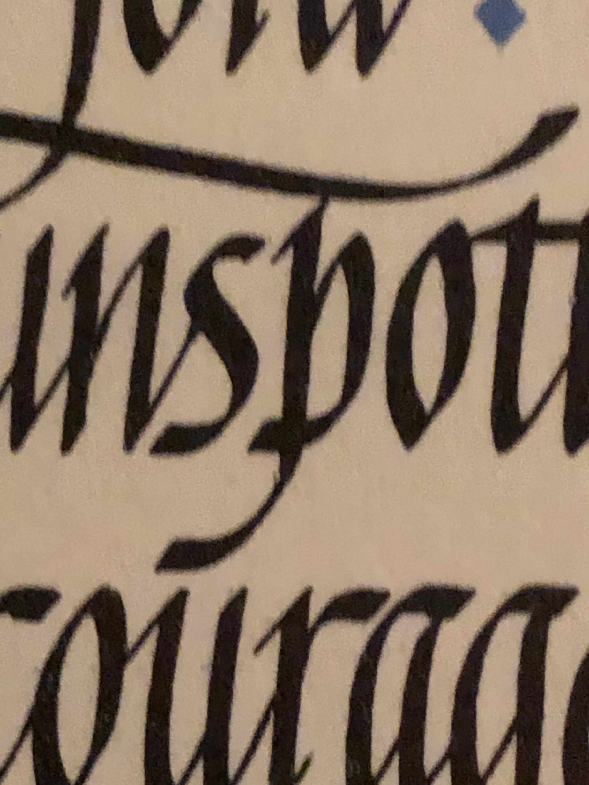

watch over thy child as his days increase bless and guide him wherever he may be • keeping him unspotted from the world • strengthen him when he stands • Comfort him when discouraged or sorrowful raise him up if he fall • and in his heart
may thy peace which pass in the understanding abide all • the days of his life through jesus christ our lord, amen
Growing up in a Presbyterian family has become incorporated with who I am as an artist. Within my work I try to use my knowledge of Christianity and American culture and incorporate it with Buddhism and Vietnamese culture. This concept
that I’ve built represents who I am, an adopted Asian-American, and my ambition to become more educated about my Asian ethnicity.
By investigating my history, researching my Asian and American ethnicity, and essentially publicizing my own content I am using this opportunity to make an important gesture. I think it’s an important gesture towards looking at myself, my past, and my context. Me publicizing the invisible and important is my way of understanding who I am, it’s my way of developing as a person.
By investigating my history, researching my Asian and American ethnicity, and essentially publicizing my own content I am using this opportunity to make an important gesture. I think it’s an important gesture towards looking at myself, my past, and my context. Me publicizing the invisible and important is my way of understanding who I am, it’s my way of developing as a person.
The prayer that hangs above my bed.

Details





